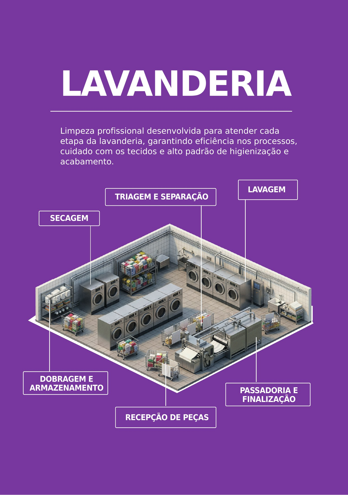
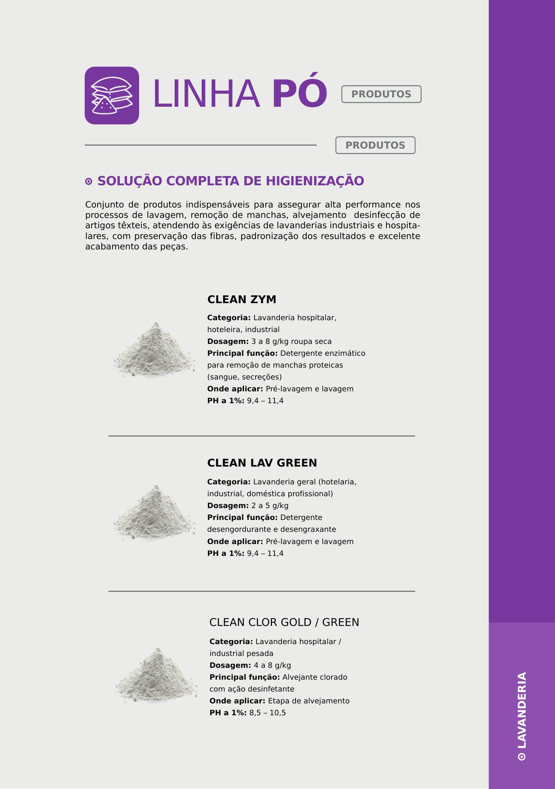
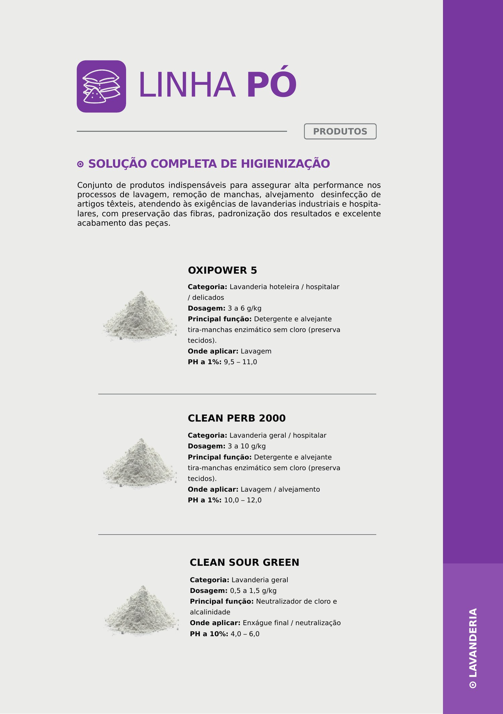
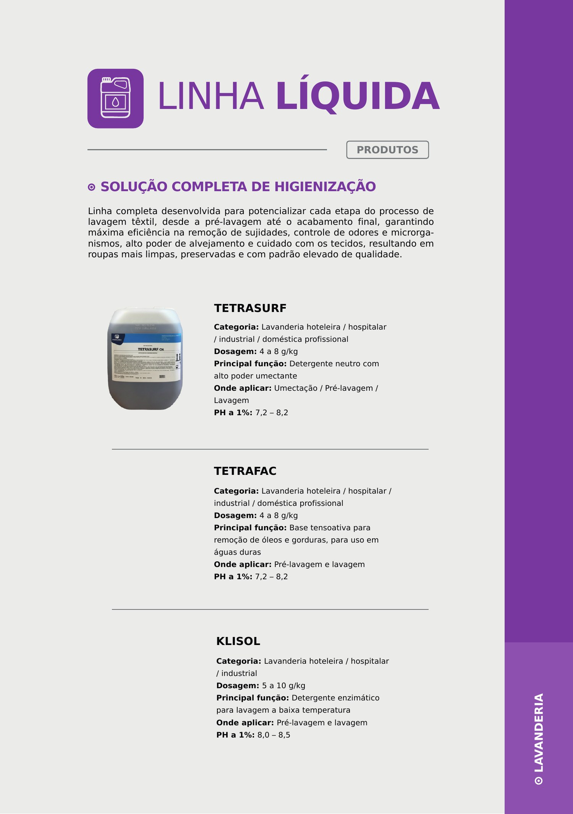
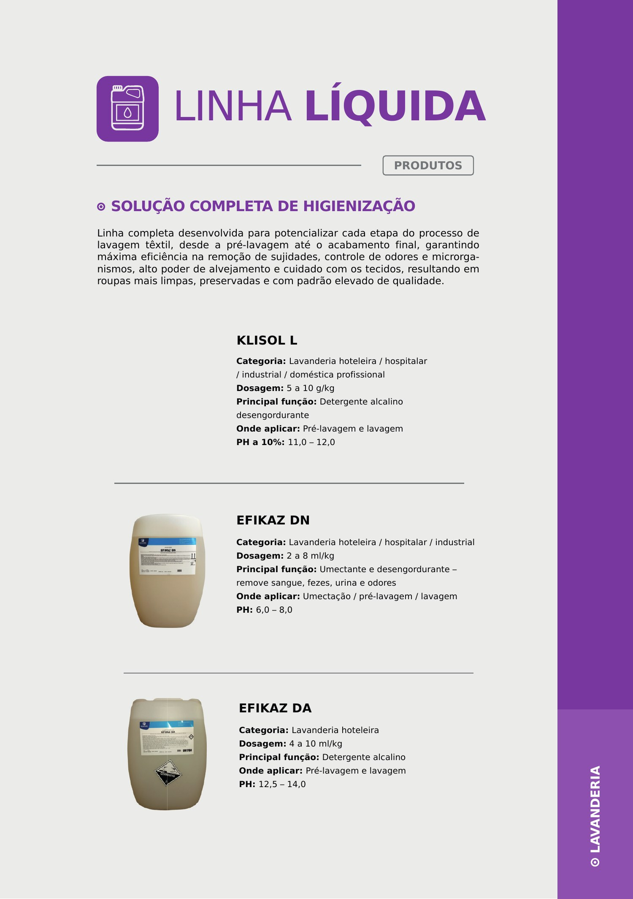
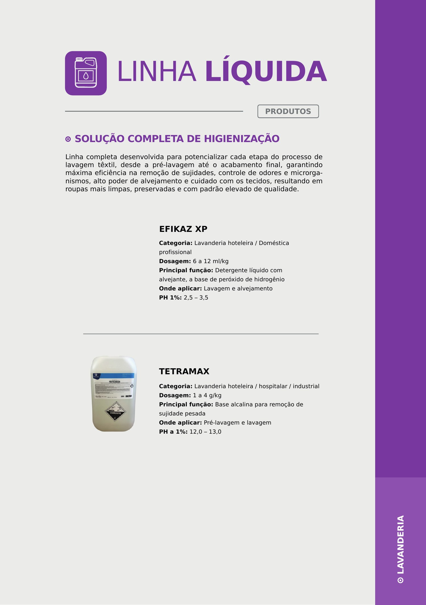
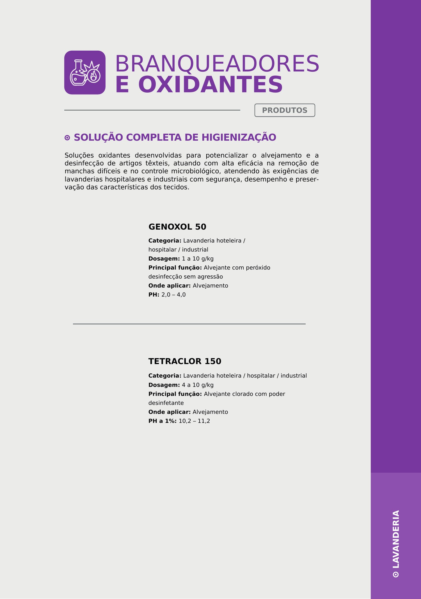

Lavanderia Profissional
Uma visão completa do processo de lavanderia profissional, organizada por etapa e por tipo de produto.
Informação organizada para facilitar a escolha.
O material técnico estrutura a operação desde a recepção e triagem das peças até lavagem, secagem, passadoria, finalização, dobragem e armazenamento. A proposta é combinar desempenho de lavagem, conservação dos tecidos e padronização do acabamento.
Visão da operação
O fluxo começa na recepção e separação das peças, segue por lavagem e secagem e termina em passadoria, finalização, dobragem e armazenamento. Essa visão facilita organizar procedimentos e produtos por etapa.
Baseado no PDF técnico fornecido
Linha em pó — etapa 1
Clean Zym atua como detergente enzimático para manchas proteicas; Clean Lav Green tem ação desengordurante e desengraxante; Clean Clor Gold/Green é um alvejante clorado com ação desinfetante.
Baseado no PDF técnico fornecido
Linha em pó — etapa 2
Oxipower 5 e Clean Perb 2000 combinam detergência e alvejamento sem cloro em diferentes aplicações. Clean Sour Green atua na neutralização de cloro e alcalinidade no enxágue final.
Baseado no PDF técnico fornecido
Linha líquida — detergência e umectação
Tetrasurf oferece alto poder umectante, Klisol é um detergente enzimático para lavagem a baixa temperatura e Tetrafac funciona como base tensoativa para remoção de óleos e gorduras, inclusive em águas duras.
Baseado no PDF técnico fornecido
Linha líquida — desengordurantes
Klisol L e Efikaz DA são soluções alcalinas para pré-lavagem e lavagem. Efikaz DN combina umectação e desengorduramento para remover sujidades orgânicas e odores.
Baseado no PDF técnico fornecido
Linha líquida — lavagem pesada e alvejamento
Efikaz XP combina detergência líquida e alvejamento à base de peróxido de hidrogênio. Tetramax é uma base alcalina direcionada à remoção de sujidade pesada.
Baseado no PDF técnico fornecido
Branqueadores e oxidantes
Genoxol 50 é um alvejante com peróxido voltado à desinfecção sem agressão aos tecidos. Tetraclor 150 é um alvejante clorado com poder desinfetante.
Baseado no PDF técnico fornecidoPrecisa definir produtos e equipamentos para sua operação?
Fale com o comercial e informe o tipo de ambiente, processo e necessidade principal.